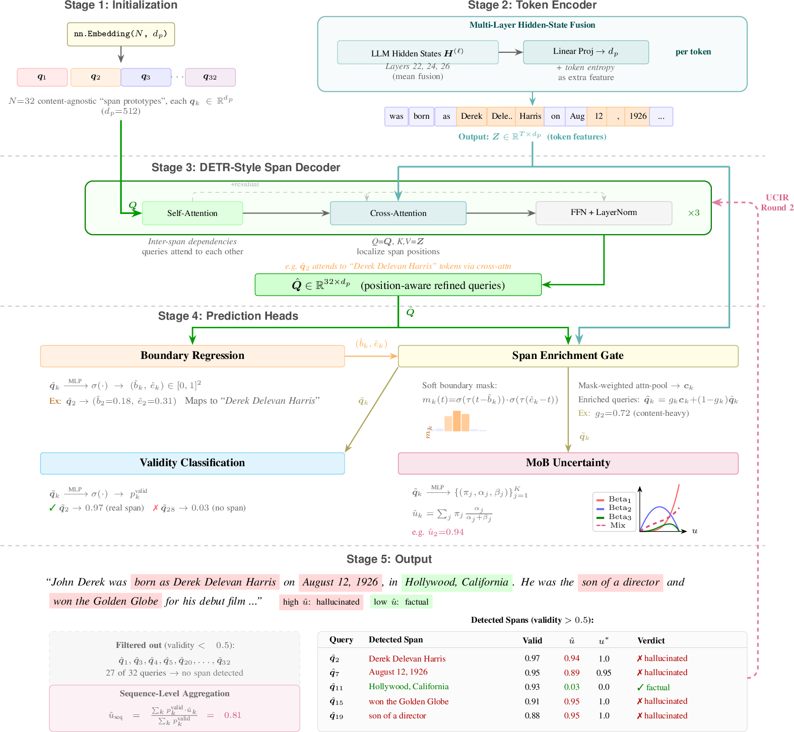

Span-Level Uncertainty Quantification for Large Language Model Generation
Uncertainty estimation is essential not only for the trustworthy deployment of large language models (LLMs) but also as a foundation for self-refinement in LLM generation. However, existing approaches operate at suboptimal granularities: token-level scores lack semantic coherence, while sequence-level scores fail to localize errors.
We formalize Span-Level Uncertainty Estimation (SLUE), a new task that targets the natural granularity for uncertainty: semantically coherent text spans, each conveying a single assessable unit of meaning.
To address this task, we introduce SpanUQ, a lightweight (~25M parameter) probe that distills the uncertainty knowledge from expensive multi-sample inference into a single forward pass over LLM hidden states.
SpanUQ employs a DETR-style span decoder to simultaneously detect spans and estimate their uncertainty via a Mixture of Beta distribution, trained with a principled combination of Beta NLL regression and contrastive ranking objectives.
We construct SpanUQ-Benchmark, the first span-level uncertainty benchmark comprising 20K prompts, ~293K annotated spans, and continuous soft labels derived from multi-sample claim verification.
Experiments on five LLM backbones show that SpanUQ consistently achieves the best span-level uncertainty quality (AUROC 0.908–0.944, MAE 0.110–0.129), outperforming the strongest probe baseline and all sampling-based methods while being 10–20× faster.
Its DETR-based span detector attains 0.910 F1, surpassing the best heuristic by 39.4%, enabling precise error localization that sequence-level methods cannot provide.
Comparing uncertainty estimation granularities on an LLM response with a factual error
A lightweight probe that distills multi-sample uncertainty into a single forward pass

Figure: Span query lifecycle in SpanUQ — from initialization through token encoding, DETR decoding, prediction heads, to final output with UCIR refinement.
Each component addresses a specific challenge in span-level uncertainty estimation
Different LLM layers encode different aspects of uncertainty. We fuse hidden states from peak-zone layers (e.g., layers 22, 24, 26 of Qwen3-14B) where uncertainty information is maximized.
32 learnable span queries attend to token features via cross-attention, enabling parallel detection of overlapping spans without the limitations of BIO tagging. Achieves 0.910 F1.
Models span uncertainty with K=3 Beta components, capturing the bimodal nature of uncertainty (certain vs. hallucinated) and intermediate cases. Nearly self-calibrated (ECE = 0.020).
Feeds Round-1 uncertainty estimates back through the shared decoder for a second pass, correcting systematic biases with less than 15% overhead. Improves ranking correlation by 3%.
Evaluated across five LLM backbones spanning two model families and both dense and MoE architectures
| Method | Qwen3-14B | Qwen3-8B | Qwen3-4B | Qwen3-30B-A3B | Mistral-7B | ||||||||||
|---|---|---|---|---|---|---|---|---|---|---|---|---|---|---|---|
| AUROC↑ | MAE↓ | ρs↑ | AUROC↑ | MAE↓ | ρs↑ | AUROC↑ | MAE↓ | ρs↑ | AUROC↑ | MAE↓ | ρs↑ | AUROC↑ | MAE↓ | ρs↑ | |
| Token Entropy | 0.603 | 0.230 | 0.097 | 0.580 | 0.226 | 0.111 | 0.575 | 0.272 | 0.119 | 0.592 | 0.196 | 0.097 | 0.569 | 0.231 | 0.109 |
| MLP Probe* | 0.881 | 0.139 | 0.575 | 0.884 | 0.149 | 0.612 | 0.873 | 0.179 | 0.626 | 0.893 | 0.120 | 0.575 | 0.863 | 0.146 | 0.562 |
| Verbalized Conf. | 0.593 | 0.187 | 0.131 | 0.574 | 0.217 | 0.155 | 0.595 | 0.267 | 0.141 | 0.598 | 0.167 | 0.117 | 0.498 | 0.171 | −0.026 |
| SelfCheckGPT-NLI | 0.808 | 0.158 | 0.471 | 0.801 | 0.182 | 0.473 | 0.782 | 0.215 | 0.479 | 0.813 | 0.147 | 0.455 | 0.816 | 0.154 | 0.499 |
| P(True) | 0.526 | 0.197 | 0.087 | 0.546 | 0.233 | 0.121 | 0.529 | 0.273 | 0.122 | 0.541 | 0.194 | 0.123 | 0.505 | 0.199 | 0.005 |
| FActScore | 0.625 | 0.178 | 0.181 | 0.762 | 0.197 | 0.405 | 0.714 | 0.233 | 0.390 | 0.701 | 0.169 | 0.306 | 0.661 | 0.182 | 0.297 |
| SpanUQ (Ours) | 0.939 | 0.110 | 0.685 | 0.930 | 0.129 | 0.692 | 0.944 | 0.126 | 0.754 | 0.936 | 0.110 | 0.647 | 0.908 | 0.126 | 0.637 |
Span-level uncertainty estimation across five LLM backbones. Token-level methods aggregate token scores within each span; sequence- and claim-level methods broadcast a single score to all spans. *MLP Probe uses ground-truth span boundaries (oracle setting).
@article{zhang2025spanuq,
title={SpanUQ: Span-Level Uncertainty Quantification for Large Language Model Generation},
author={Zhang, Yimeng and Zhuang, Yingying and Wang, Ziyi and Lu, Yuxuan and Chen, Pei and Gupta, Aman and Su, Zhe and Tan, Ming and Zhang, Zhilin and Liu, Qun and Ramanathan, Manikandarajan and Maragoud, Rajashekar and Vul, Edward and Huang, Jing and Wang, Dakuo},
journal={arXiv preprint arXiv:2607.05721},
year={2025}
}